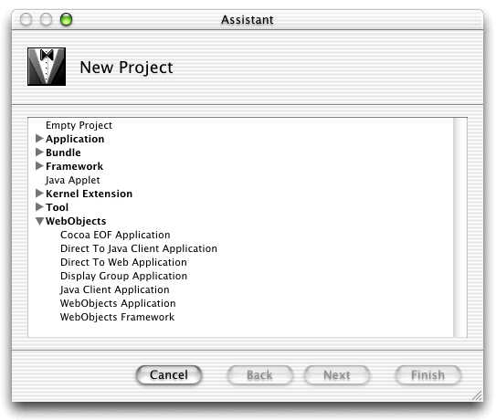
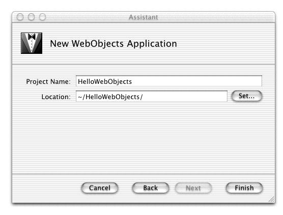
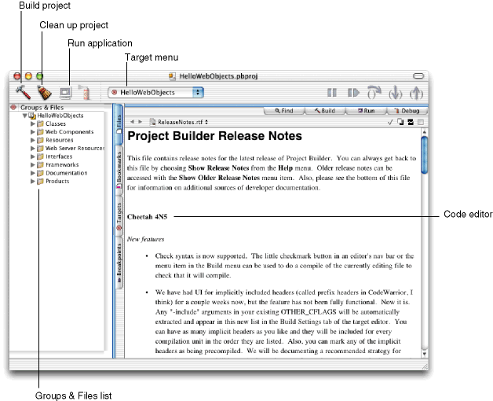
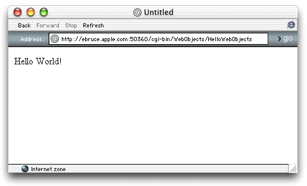

| PATH |

There is a place for breaking with tradition, but this is not it: your first WebObjects application will display "Hello World!" in your browser. Though this project is trivial, it does serve as an example with which to examine the interface of Project Builder. Also, a successful build and launch verifies that your development environment is correctly installed and configured.
The first time you run Project Builder, you are greeted by a setup assistant that walks you through some of the basic configuration settings of Project Builder. At this point, you could customize the build system used to compile your projects, but for now, accept the default options on each pane.
When you first launch Project Builder, you see only its menu bar. To create a project to work in, choose New Project from the File menu. The Project Builder Assistant appears, walking you through a few steps to create a new project.
Figure 3-1 The New Project Assistant
There are several project types to choose from. Each starts out with a slightly different set of files and configuration to facilitate particular types of applications, from command-line tools to desktop applications. The following are two types of WebObjects project you can develop:
Follow these steps to build your first WebObjects application project.
HelloWebObjects in
the Project Name text input field.If you don't want to use the default project location, click Set and navigate to the directory where you want to store your project.
Figure 3-2 Choosing a location for the project
A window similar to the one in Figure 3-3 appears.
Figure 3-3 Project Builder's main window
The Project Builder main window organizes all the files in your project and provides all the tools you need to edit, build, and debug them.
When you first create a project, Project Builder displays the release notes in the code editor, which is the pane where you usually edit files. This document contains information about the latest release of Project Builder. You should read it carefully.
The left pane is a tabbed pane used for organization. In the Groups & Files pane, which is initially visible, there are several groups of files, each with a disclosure triangle.
This
group initially contains the .java files
for the Application, Session, and DirectAction classes that your
application uses. You can customize your application by changing
these files. In addition, when you add new classes to your project,
they are stored here by default.
Each Web page or component you create is stored within its own subgroup in the Web Components group. Each subgroup contains the files that define the HTML representation and WebObjects behavior for each component. Initially, only the Main subgroup is present.
Inside the Main subgroup you find three items: Main.wo, Main.java , and Main.api. They define the look and behavior of the Main component.
Graphics, sounds, and movies for your components
are stored in this folder. In database-enabled applications, the
model files (with the extension .eomodeld)
are stored here.
Some resources may be referenced not only by your WebObjects applications but also by static pages in other parts of the site. Resources in this folder are moved to a location outside of the application wrapper, where they can be accessed by other means as well.
Every WebObjects project is dependent on at least the JavaWebObjects framework, which contains the code behind WebObjects. You can add additional frameworks to your project by choosing Project > Add Files.
Documentation for your project can be organized by Project Builder.
The actual files created by compiling your application are listed under this group. It includes the executable, an organized tree of resources for components, and localized versions of the components themselves.
The other three panes, Bookmarks, Targets, and Breakpoints, are explained in greater detail later in the book.
Now you'll use WebObjects Builder to modify the Main component.
Main.wo.Double-click
the Main.wo component
in the Main subgroup in the Web Components group in the Groups &
Files list in Project Builder. The WebObjects Builder application opens
and displays a window for Main.wo.
Main.wo.Enter Hello
World! in the content pane.
Main.wo.Choose File > Save.
All that remains is to compile the project and run it. When you start the build process, Project Builder does more than compile the Java bytecode from your files. First, only files that have changed since the last build are compiled, to save time. Project Builder also gathers all the resources required for your project, organizes them for your Web server, and compresses your Java class files into a JAR (Java Archive) file.
When you choose Build from the Build menu, the build pane appears so you can watch the progress of the build. This is also the pane that displays Java compilation errors if your project has any, but its output is frequently very useful even when it doesn't contain error messages.
In Project Builder, choose Build > Build or click in the main window.
Because you didn't modify any Java code, you shouldn't encounter any compilation errors. When the compilation progress bar is complete, you're ready to run your project.
Unless you changed the default location when you first ran Project Builder, you now have a bundle called HelloWebObjects.woa in the build directory at the top level of your project's directory.
Choose Debug > Run Executable or click in Project Builder's main window.
Since your application is already built, the Run pane appears immediately, displaying the output from your application as it runs:
Reading MacOSClassPath.txt ... Launching HelloWebObjects.woa ...
. . .
Creating adaptor of class WODefaultAdaptor listening on port -1 with a listen queue size of 128 and 2 WOWorkerThreads. Creating LifebeatThread now with: HelloWebObjects -1 1085 30000 Welcome to HelloWebObjects! Opening application's URL in browser: http://localhost:49189/cgi-bin/WebObjects/HelloWebObjects Waiting for requests...
After the last line appears, the URL shown opens automatically in your default browser.
Figure 3-4 The HelloWebObjects application in action

© 2001 Apple Computer, Inc.